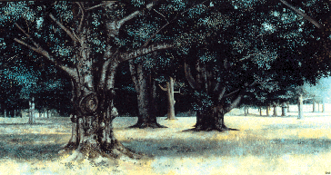

Oscar Beck
"Trees, by virtue of their universal presence, majestic yet human scale, bridging the gap between earth and air, are the rightful symbols of all which humankind aspires to in its relationship with the planet."
-Oscar Beck

c. Oscar Beck
"Beeches"
Acrylic on Paper, 9"X18"
Beech
Latin Name TBA
age: TBA
circumference 54 inches from base: TBA
location: Stronghold Mansion, Bernardsville, New Jersey
 Return to Main Page
Return to Main Page
June Julian jj68@nyu.edu